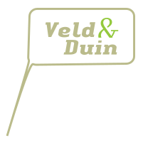
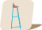
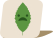

{% include layout-prelude.html %}
Map
{% include meta.html %}



Da werkt nie
Info
De kaartlaag in deze applicatie komt van de
OpenStreetMap Foundation
La couche de carte dans cette demande provient de la
Fondation OpenStreetMap
Die Kartenschicht in dieser Anwendung kommt von der
OpenStreetMap Foundation
The map layer in this application comes from the
OpenStreetMap Foundation